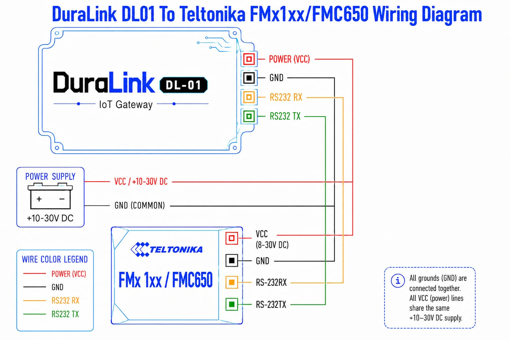

DL-01 RS232-to-WiFi Gateway
1. Overview
DURALINK is a compact WiFi gateway that sits between a Teltonika GPS/telematics tracker and your data infrastructure. It receives telemetry data from the tracker over a standard RS232 connection and forwards it to your MQTT broker or Teltonika-compatible server over WiFi.
Once installed, you may configure the device via its built-in Access Point. The device creates its own WiFi hotspot that you connect to with any browser for full configuration — no software installation, drivers, or laptop required in the field.
DURALINK stores records locally on an SD card when the server connection is unavailable, then automatically delivers them when connectivity is restored — ensuring no data is lost in areas with intermittent WiFi or server outages.
2. Key Features
| Zero-Cable Configuration | All settings configured wirelessly via web browser. No USB cable needed after initial installation. |
| Mobile-Friendly Portal | Built-in web portal works on any phone or tablet browser without installing an app. |
| Dual Tracker Support | Compatible with Teltonika FMC125 and FMC650 GPS trackers out of the box. |
| Auto-IMEI Detection | Device automatically reads the tracker's IMEI number — no manual entry required. |
| MQTT & Codec 8E Output | Choose between JSON over MQTT or Teltonika Codec 8 Extended binary TCP to match your platform (compatible with Flespi, Wialon, and others). |
| Multi-Network WiFi Roaming | Store up to 5 WiFi networks. DURALINK connects to the strongest available signal automatically. |
| Store-and-Forward | Records saved to SD card while offline and delivered automatically when the connection returns. No data is lost. |
| Hardware Real-Time Clock | Accurate timestamps on every record, even without GPS lock or internet access. |
| Automatic NTP Sync | Synchronises time with internet NTP servers whenever WiFi is connected. |
| Browser OTA Firmware Update | Upload new firmware directly from the portal. No USB cable or site visit required. |
| Remote Reboot | Restart the device remotely from the portal without a physical site visit. |
| Factory Reset via BOOT Button | Hold the BOOT button for 5 seconds to restore all settings to factory defaults. |
| Unique Device Identity | Each unit broadcasts a unique hotspot name (DuraLink-XXXX) based on its hardware ID for easy identification in multi-unit deployments. |
| Settings Preserved on Update | WiFi credentials, server settings, and all configuration are retained when firmware is updated. |
3. What You Need
Included
- DURALINK device (firmware pre-installed)
Required — provided by installer
| Item | Notes |
|---|---|
| Teltonika GPS tracker | FMC125 or FMC650 with an RS232 port |
| RS232 cable | Between the tracker's RS232 port and DURALINK |
| MicroSD card | Any capacity; must be FAT32 formatted — used for store-and-forward buffering |
| WiFi network | With internet access for data delivery and NTP time sync |
| Power supply | 9V - 26V |
4. First-Time Setup
4.1 Wiring Diagram

4.2 Configuration Steps
1. Power on the device
Apply 9V - 26V power. DURALINK starts up and broadcasts its own WiFi hotspot within 10 seconds.
2. Connect to the DURALINK hotspot
On your phone or laptop, open WiFi settings and connect to:
| Network Name (SSID) | DuraLink-XXXX (last 4 characters are unique to your device) |
| Password | rs232config |
3. Open the configuration portal
Open any web browser and navigate to http://192.168.4.1. The DURALINK portal opens automatically.
4. Connect to your WiFi network
Go to the WiFi tab, click the scan button, select your network, enter the password, then click Save & Reconnect.
5. Select your tracker type
Go to the Device tab, select FMC125 or FMC650, click Save & Reconnect, then power-cycle the device.
6. Configure your server
Go to the Server tab, choose MQTT or Codec 8E TCP, enter your server address and credentials, then click Save & Reconnect.
7. Verify operation
Check the status bar at the top of the portal. All indicators should show green. The device is now operational.
http://192.168.4.1 even after the device connects to your router. You can reconfigure at any time without interrupting data transmission.
5. Configuration Portal
The DURALINK portal is a web interface accessible at http://192.168.4.1 from any device
connected to the DURALINK hotspot or the same local network. No app or software installation is required.
5.1 Status Bar
The top of the portal shows live status indicators for all subsystems:
| Indicator | Meaning |
|---|---|
| WiFi: NetworkName (IP) | Connected to your router. The assigned IP address is shown. |
| WiFi: Offline | Not connected. Check credentials in the WiFi tab. |
| MQTT/TCP: Connected | Server connection active. Data is being delivered. |
| MQTT/TCP: Offline | Server unreachable. Records are being stored on the SD card. |
| SD: Mounted | SD card detected and working correctly. |
| SD: Not mounted | SD card missing or unreadable. Records cannot be buffered locally. |
| Device: FMC125 / FMC650 | Currently active tracker input mode. |
Below the indicators, a storage bar shows SD card usage (used / total MB) and the number of records currently waiting to be delivered to the server.
5.2 WiFi Tab
Configure which WiFi networks the device connects to. Up to 5 networks can be stored — DURALINK automatically connects to the strongest known network at startup.
| Setting | Description |
|---|---|
| Network Scan | Click the scan button to discover nearby WiFi networks. Click any result to auto-fill the network name. |
| Network SSID | The name of your WiFi network. |
| Password | Your WiFi password. Hidden by default — use the show/hide toggle to reveal. |
| Add / Remove | Manage up to 5 network profiles. Device picks the strongest available at startup. |
| CSV Import | Upload a .csv file to add multiple WiFi profiles at once. |
| CSV Export | Download your current WiFi profiles as a backup file. |
Click Save & Reconnect to apply changes.
5.3 Device Tab
Select which Teltonika tracker is connected to the RS232 port.
| Option | Use When |
|---|---|
| FMC125 | A Teltonika FMC125 tracker is connected via RS232. |
| FMC650 | A Teltonika FMC650 tracker is connected. The FMC650 must be set to Rec to LCD output mode in the Teltonika Configurator application. |
5.4 Server Tab
Choose where DURALINK sends telemetry data and configure the transport settings.
| Setting | Description |
|---|---|
| Output Mode | MQTT (JSON) — sends JSON records to an MQTT broker. Codec 8E TCP — sends Teltonika binary packets to a compatible server. |
| Broker / Server Host | IP address or hostname of your MQTT broker or Codec 8E server. |
| Port | TCP port number. MQTT default: 1883. Codec 8E: as configured by your platform. |
| MQTT Topic | The topic records are published to (MQTT mode only). |
| QoS | MQTT Quality of Service: 0 = fire and forget, 1 = at least once, 2 = exactly once. |
| Keep-Alive | MQTT keep-alive interval in seconds. |
| Device IMEI | Auto-filled when the tracker IMEI is detected. Required for Codec 8E mode. |
Click Save & Reconnect to apply changes.
5.5 Maintenance Tab
System tools and device management functions.
Access Point Settings
Change the name (SSID) and password of the DURALINK's own WiFi hotspot.
SD Storage
Displays live SD card usage (used / total MB) and the number of records currently waiting to be delivered to the server.
Reboot Device
Remotely restarts DURALINK. Useful after configuration changes that require a restart without a physical site visit.
Delete All Records
Permanently deletes all records stored on the SD card. This action cannot be undone.
Firmware Update (OTA)
Upload new firmware directly from your browser. See Section 8 — OTA Firmware Update for the complete procedure.
Device Info
Displays the device MAC address (unique hardware identifier) and the currently installed firmware version. Useful when managing multiple deployed units.
6. Data Output Reference
6.1 MQTT — JSON Format
In MQTT mode, each tracker record is published as a JSON object to the configured topic:
{
"Timestamp": "1747187905000",
"Priority": "0",
"Latitude": "13.756331",
"Longitude": "100.501762",
"Altitude": "12",
"Angle": "270",
"Speed": "0",
"HDOP": "0.7",
"Sat": "8",
"IO_Data": {
"22": "4",
"66": "12133",
"67": "0",
"71": "1",
"181": "0",
"239": "0"
}
}| Field | Description |
|---|---|
Timestamp | Unix time in milliseconds, sourced from the hardware RTC — accurate even without GPS lock or internet access. |
Priority | Record priority from the tracker: 0 = Low, 1 = High, 2 = Panic. |
Latitude / Longitude | GPS coordinates in decimal degrees. |
Altitude | Altitude above sea level in metres. |
Angle | Vehicle heading in degrees (0–359, where 0° = North). |
Speed | Speed in km/h. |
HDOP | GPS horizontal dilution of precision — a lower value indicates better positional accuracy. |
Sat | Number of GPS satellites currently locked. |
IO_Data | Key/value map of Teltonika IO element IDs and their values. Refer to the Teltonika IO element documentation for ID definitions specific to your tracker model. |
6.2 Codec 8 Extended — Binary TCP
In Codec 8E mode, DURALINK sends standard Teltonika Codec 8 Extended binary packets over TCP. This mode is compatible with major fleet management platforms including:
- Flespi (app.flespi.io)
- Wialon (wialon.com)
- Any Codec 8 Extended compliant TCP server
No additional configuration is required on the DURALINK side beyond entering the server address, port, and verifying the IMEI is correct in the Server tab.
7. Store-and-Forward
DURALINK is designed to never lose a telemetry record, even when the WiFi or server connection is temporarily unavailable.
Publisher task checks server connection every 5 seconds
| Behaviour | Detail |
|---|---|
| Record naming | Files stored sequentially: 00000001.jsn, 00000002.jsn, and so on. |
| After reboot | Numbering resumes from the highest existing file — no records are skipped or duplicated. |
| During outage | Records accumulate safely on the SD card with no data loss. |
| On reconnect | All pending records are delivered to the server in sequence, automatically. |
| No SD card | DURALINK falls back to direct publish. If the connection fails at the time of transmission, that record is not retained. |
8. OTA Firmware Update
DURALINK supports wireless firmware updates directly from the web portal. No USB cable or site visit is required.
.bin format) from Maruko Dura Solusi before proceeding. Ensure your device is connected to the DURALINK hotspot or the same local WiFi network as the device.
1. Open the portal
Connect to the DURALINK hotspot and navigate to http://192.168.4.1.
2. Go to Maintenance tab
Click the Maintenance tab in the portal navigation bar.
3. Select the firmware file
Under Firmware Update, click Choose .bin file and select the firmware file provided by your supplier.
4. Start the upload
Click Upload & Install. A progress bar shows the real-time upload status. This takes approximately 10–30 seconds depending on file size.
5. Wait for reboot
When the upload completes, the device automatically reboots into the new firmware. Allow approximately 10 seconds.
6. Verify the update
Reconnect to the portal, go to the Maintenance tab, and confirm the version number shown in Device Info.
9. Factory Reset
If you have forgotten the AP hotspot password or need to fully restore DURALINK to its default configuration, a factory reset can be performed using the physical BOOT button on the device.
1. Locate the BOOT button
Find the button labelled BOOT on the DURALINK device.
2. Hold the button for 5 seconds
While the device is powered on, press and hold the BOOT button continuously for 5 seconds.
3. Wait for automatic reboot
The device erases all saved configuration and restarts automatically. This takes approximately 5 seconds.
4. Reconnect using default credentials
After reboot, reconnect using the factory default hotspot name and password shown in the table below.
Default Settings After Reset
| Parameter | Default Value |
|---|---|
| AP Network Name (SSID) | DuraLink-XXXX — last 4 characters of device MAC address |
| AP Password | rs232config |
| Portal URL | http://192.168.4.1 |
| WiFi profiles | None — cleared |
| Server / MQTT settings | None — cleared |
10. Troubleshooting
| Symptom | Likely Cause | Resolution |
|---|---|---|
| No data appearing on server | Wrong device mode or tracker not configured correctly | Verify the Device tab setting matches the connected tracker model. For FMC650, confirm the tracker is set to Rec to LCD output in the Teltonika Configurator. |
| Status bar: MQTT/TCP Offline | Server unreachable or incorrect credentials | Double-check server address, port, and credentials in the Server tab. |
| Status bar: WiFi Offline | Wrong WiFi password or router out of range | Re-enter WiFi credentials in the WiFi tab. Confirm the router is reachable and broadcasting. |
| Status bar: SD Not Mounted | SD card missing or incorrectly formatted | Reinsert the SD card and ensure it is formatted as FAT32. |
| Records accumulating, not sending | Server connection is offline | Check Server tab settings. Records will deliver automatically once the connection is restored — no manual action required. |
| Timestamps are incorrect | NTP sync failed or RTC battery depleted | Confirm the device has internet access via WiFi. If timestamps remain wrong, the RTC battery may need replacement — contact your supplier. |
| FMC650: no records appear | FMC650 not set to Rec to LCD mode | In the Teltonika Configurator, set the FMC650 RS232 data output mode to Rec to LCD. |
| Cannot connect to portal | Not connected to the DURALINK hotspot | Disconnect from any other WiFi network and connect to DuraLink-XXXX first, then navigate to http://192.168.4.1. |
| OTA update fails or shows error | Weak WiFi signal or incorrect firmware file | Stay close to the DURALINK hotspot during upload. Confirm the .bin file was obtained from Maruko Dura Solusi. |
| Device unresponsive after config change | Restart required | Use Reboot Device in the Maintenance tab, or power-cycle the device. |
| Forgot the AP hotspot password | Password changed in Maintenance tab | Perform a factory reset: hold the BOOT button for 5 seconds. All settings will return to factory defaults. |
11. Product Specifications
| Model | DL-01 RS232-to-WiFi Gateway |
| Firmware Version | v1.5.2 |
| Supported Trackers | Teltonika FMC125, Teltonika FMC650 |
| Output Protocols | MQTT (JSON), Teltonika Codec 8 Extended (TCP) |
| Wireless Standard | WiFi 802.11 b/g/n, 2.4 GHz |
| WiFi Profiles | Up to 5 (auto-selects strongest signal) |
| RS232 Baud Rate | 115200 bps |
| Local Storage | MicroSD card — FAT32, any capacity |
| Real-Time Clock | DS3231M hardware RTC, battery-backed |
| Time Synchronisation | Automatic NTP sync on WiFi connection |
| Configuration Interface | Web browser — no app or software required |
| Configuration URL | http://192.168.4.1 |
| Default AP Network Name | DuraLink-XXXX (last 4 characters of device MAC address) |
| Default AP Password | rs232config |
| Factory Reset | BOOT button — hold 5 seconds |
| Firmware Updates | Over-the-air (OTA) via browser — no USB cable required |
| Settings Persistence | Retained across power cycles and firmware updates |
| Power Input | 9V - 26V |
12. Changelog
| Version | Summary |
|---|---|
| v1.5.2 | Revised manual design; BOOT button factory reset feature added |
| v1.5.1 | Browser-based OTA firmware update (stable dual-slot); improved portal stability |
| v1.5.0 | Browser OTA introduced; unique device AP SSID; password show/hide toggle; MAC address display in portal |
| v1.3.1 | DURALINK branding; Maintenance tab with remote reboot and SD card wipe |
| v1.3.0 | FMC650 Rec-to-LCD tracker support added |
| v1.2.0 | Multi-network WiFi roaming (up to 5 profiles); WiFi CSV import/export |
| v1.1.0 | Codec 8E TCP output mode; DS3231M hardware RTC support; SD card store-and-forward |